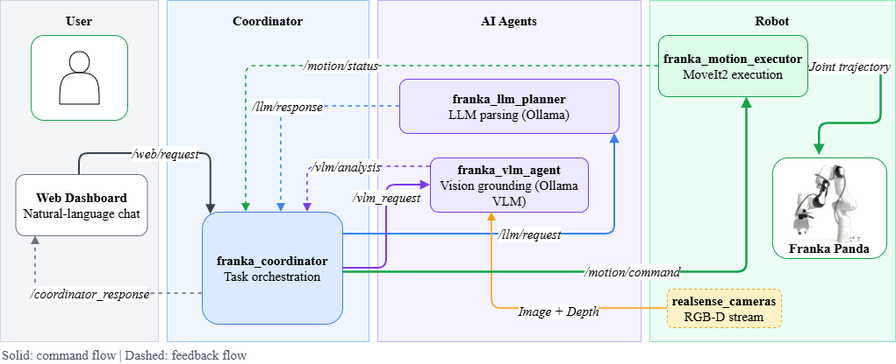

Distributed models
Local LLM and VLM nodes route instructions and ground objects without relying on a monolithic policy.
CogRob research project · RO-MAN 2026
Cognitive Robotics Group · Tampere University, Finland
Accepted to IEEE International Conference on Robot and Human Interactive Communication (RO-MAN) 2026
in Kitakyushu, Fukuoka, Japan

Abstract
This paper presents a distributed conversational framework for human-robot collaborative manipulation that integrates local language and vision-language models with a Robot Operating System 2 (ROS 2)-based execution stack. Language understanding, visual grounding, orchestration, and motion execution run as separate ROS 2 nodes, enabling flexible deployment across distributed hardware while maintaining a responsive control loop.
From free-form user commands, the system generates structured action requests for pick, place, and handover. A vision-language model returns image-space targets, which are converted into metric robot-frame goals using depth and calibration. A web dashboard exposes intermediate intent and grounding overlays and requires explicit operator confirmation before any motion is executed.
Method
The system separates what the user means, where the target is, and how the robot should move.

Local LLM and VLM nodes route instructions and ground objects without relying on a monolithic policy.
Intent, pixel, depth, and robot-frame representations remain visible through the dashboard.
An explicit confirmation step separates model suggestions from physical robot execution.
Experiments
End-to-end experiments cover pick, place, and handover under increasing scene ambiguity.
45 / 45 successful trials across the recorded configuration benchmark.
The highlighted configuration is the strongest recorded LLM/VLM pairing in the project data. For the complete comparison, task breakdown, and evaluation definitions, see the full experiment data and metrics documentation.
Publication
@inproceedings{kakroudi2026distributed,
author = {Ghasemzadeh Kakroudi, Arash and Pieters, Roel},
title = {A Distributed Conversational Framework for
Human-Robot Collaborative Manipulation Using
Local LLMs and VLMs},
booktitle = {2026 IEEE 35th International Conference on
Robot and Human Interactive Communication (RO-MAN)},
year = {2026},
pages = {2038--2045},
doi = {10.1109/RO-MAN72286.2026.11714760}
}Resources